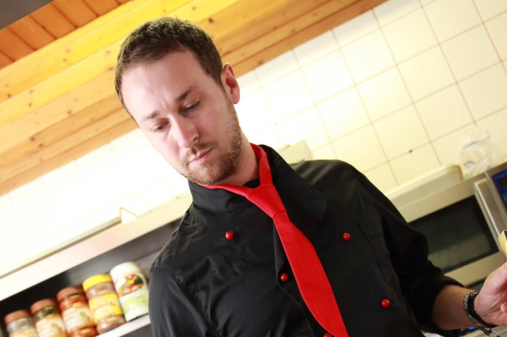
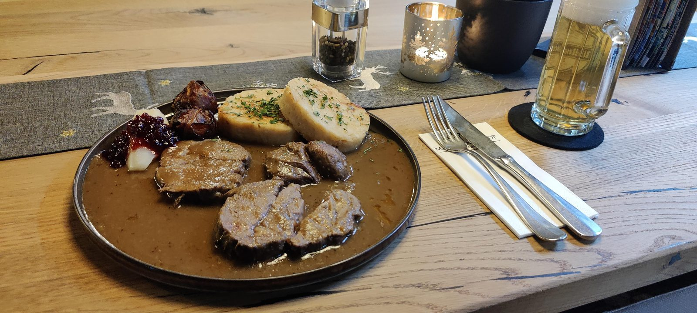
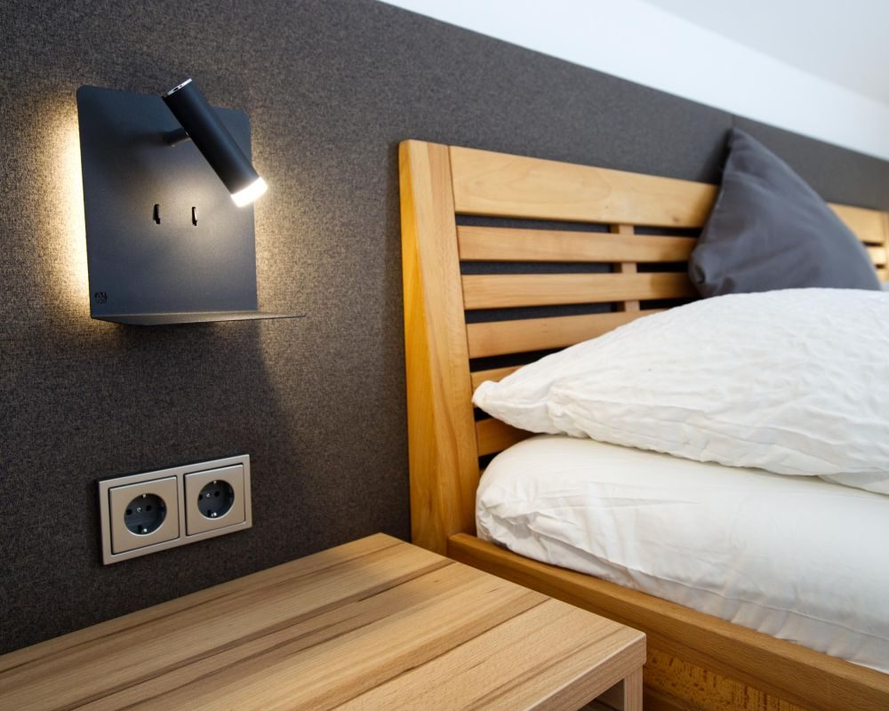

À la carte
Klassiker vom Wiener Schnitzel bis zum Bratl in da Rein, Innviertler Krenfleisch, Grillteller und Ripperl – alles mit Preisen auf einen Blick.
Gasthaus Schrattenecker · Mattighofen
Gutbürgerliche Innviertler Küche, rund 15 nationale und internationale Biere und ein Gastgarten unter zwei großen kanadischen Ahornbäumen – zwei Minuten vom Stadtplatz und vom Bahnhof entfernt.

Der Gasthof
Der Mattigtalerhof liegt in der Postgasse, keine zwei Gehminuten vom Stadtplatz und vom Bahnhof Mattighofen. Alle Einkaufsmöglichkeiten sind zu Fuß erreichbar.
Auf den Tisch kommt gutbürgerliche, traditionelle und regionale Innviertler Küche – dazu Gerichte, in denen regionale Produkte international gedacht werden. Gegessen wird in der traditionell belassenen Gaststube oder im Sommer draußen im schattigen Gastgarten unter zwei großen kanadischen Ahornbäumen.
Mit dem Speisenangebot und der Bierauswahl – rund 15 nationale und internationale Sorten – haben wir schon viele Gäste positiv überrascht. Und wenn es später wird: Fünf Gästezimmer stehen zum Nächtigen bereit.

Drei Gründe zu kommen
Klassiker vom Wiener Schnitzel bis zum Bratl in da Rein, Innviertler Krenfleisch, Grillteller und Ripperl – alles mit Preisen auf einen Blick.

Uttendorfer vom Fass, alkoholfreie Alternativen und eine Craftbier-Auswahl von Hofstettner über BrewDog bis zum Samiclaus mit 14 Vol.%.

Burgerwochen, ProBierMa(h)l, Lord of the Wings, Stadtfest und Martini Gans – der Jahreskalender steht.
Nächste Termine
Ort: Mattigtalerhof
Ort: Mattigtalerhof · 18:00 – 23:59
Ort: Mattigtalerhof
Ort: Mattigtalerhof
Für Montag und Dienstag sind keine Öffnungszeiten angeführt – für Gruppen und Feiern fragen Sie bitte direkt an.

Übernachten
Zum Übernachten stehen fünf Gästezimmer in familiärer Ausstattung zur Verfügung – praktisch für Monteure, Hochzeitsgäste, Radfahrer und alle, bei denen es am Abend später geworden ist.
Der Bahnhof Mattighofen liegt in unmittelbarer Nähe, der Stadtplatz ist in zwei Minuten zu Fuß erreicht.
Galerie
Bilder aus dem Mattigtalerhof – zum Vergrößern anklicken.
Ein 3D-Rundgang durch das Haus besteht bereits und wird in der Live-Version an dieser Stelle eingebunden.
Reservierung
Tischreservierung, Zimmeranfrage und Gruppenreservierung laufen über ein Formular – oder ganz direkt telefonisch unter +43 7742 2562.